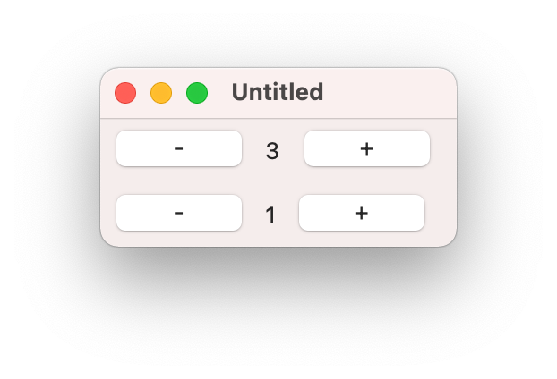

The code above describes a view hierarchy rooted in a window that
contains the text “Hello, World!”. By itself, it doesn’t do much,
but you can take it and pass it to render to convert it into
a native GUI:
Here we define an observable called @count that holds the
current value of a counter. The two buttons change the value
of the counter when clicked and the text view displays its
current string value via a derived observable. The three widgets are
laid out horizontally by the hpanel.
1.3Counters

Since views are at their core just descriptions of a GUI, it’s easy to
abstract over them and make them reusable.
Here the @counters observable holds a list of pairs where
the first element of a pair is the id of each counter and the second
is its count. When the “Add counter” button is clicked, a new
counter is added to the list. The list-view renders each
individual counter by passing in a derived observable to its
make-view argument.
1.5More
For more examples, see the "examples" directory in the Git repository.
Containers, Windows & Dialogs take optional
keyword arguments that allow you to control the #:spacing and
#:alignment of their children and their own
#:min-size, #:stretch and #:margin. All of
these arguments can be passed as either regular values or as
observables, in which case the properties they control will
vary with changes to the observables.
3Custom Views
You can create your own views by implementing the view<%>
interface.
As an example, let’s wrap Jeffrey Massung’s canvas-list<%>. I find
it helps to work backwards from the API you’d like to end up with. In
this case, that would be:
A canvas-list takes an observable of a list of entries, a
function that knows how to draw each entry to a gui:dc<%> and
a callback for when the user double-clicks an entry. The
canvas-list function should then look something like this:
Views must communicate what observables they depend on to their
parents. Since the only dependency a canvas list has is its set of
entries, that’s straightforward:
When a view is rendered, its parent is in charge of calling its
create method. That method must instantiate a GUI
object, associate it with the passed-in parent, perform any
initialization steps and then return it. In our case:
When the observables the view depends on change, its parent
will call its update method with the GUI object that
the view returned from its create method, the
observable that changed and the observable’s value when it changed.
The view is then in charge of modifying its GUI object appropriately.
Finally, when a view is no longer visible, its destroy method is called to dispose of the GUI object and perform any
teardown actions. In our case, there’s nothing to tear down so we can
let garbage collection take care of destroying the
canvas-list% object:
When the view becomes visible again, its create
method will be called again and the whole cycle will repeat itself.
That’s all there is to it whe it comes to custom controls. See the
“hn.rkt” example for a program that uses a custom view.
3.1Custom Containers
Containers are slightly more complicated to implement than controls.
They must collect all their children’s unique dependencies and list
them in their dependencies method. Additionally,
their update method is in charge of dispatching
updates to their children.
See “gui-easy-lib/gui/easy/private/view/panel.rkt” for an example.
4Escape Hatches
Some views take a #:mixin argument that can be used to alter
the behavior of the underlying widget. These are intended to be used
as “escape hatches” when the library doesn’t provide a piece of
functionality you need, but that functionality is available on the
native widget.
See "examples/close-window.rkt" for a example of using a mixin to
programmatically toggle a window’s visibility.
When a parent renderer is provided, renders the view as a
child of the root view of parent. This is useful when you
need to render a modal dialog on top of an existing window.
Returns the root widget of r. This function is handy when
you need to embed a gui:top-level-window<%>. The
embed function won’t show the embedded window, so you’ll
need to get it and send it a show message.
The #:choice->label argument controls how each choice is
displayed and the #:choice=? argument controls how the
current #:selection is compared against the list of choices
to determine the currently selected tab.
On user interaction, action is called with a symbol
representing the event, the set of choices at the moment the action
occurred and the current selection. The selection may be adjusted
depending on the event (eg. when the current tab is closed, the
selection changes to an adjacent tab). When tabs are reordered, the
choices provided to the action represent the new tab order.
See "examples/tabs.rkt" for an example.
Changed in version 0.3 of package gui-easy-lib: Added the #:choice=? argument. Changed in version 0.3: The selection is now a value in the set of choices instead of an index.
Returns a representation of a panel that renders the
entries by passing each one as a derived observable
to make-view. Each entry must have a unique
#:key.
Returns a representation of a canvas that is redrawn using the
result of make-snip whenever data changes. The
snip is converted to a bitmap before being drawn to the canvas so it
is non-interactive. Use this view when you want to efficiently
update plots. For interactive snips, see snip.
Returns a representation of a choice widget that calls
action whenever the current selection changes.
The #:choice->label argument controls how each choice is
displayed and the #:choice=? argument controls how the
current #:selection is compared against the list of choices
to determine the selection index.
The #:mode argument controls how the image stretches to
fill its container. If the mode is 'fit, then the image
will preserve its aspect ratio, otherwise it will stretch to fill
the container.
Returns a representation of a text field that calls action
on change. The first argument to the action is the type of
event that caused the input to change and the second is the contents
of the text field.
The #:value=? argument controls when changes to the input
data are reflected in the contents of the field. The contents of
the input field only change when the new value of the underlying
observable is not value=? to the previous one. The only
exception to this is when the textual value (via
#:value->text) of the observable is the empty string, in
which case the input is cleared regardless of the value of the
underlying observable.
The #:value->text argument controls how the input values
are rendered to strings. If not provided, value must be
either a string? or an observable of strings.
Returns a representation of a radio box widget that calls
action whenever the current selection changes.
The #:choice->label argument controls how each choice is
displayed and the #:choice=? argument controls how the
current #:selection is compared against the list of choices
to determine the selection index.
Unlike choice, the set of choices cannot be changed.
Returns a representation of a table that calls action when
the selection changes or when one of its columns is clicked (if the
'clickable-headers style is set). The action
callback is called with the type of event that occurred, the set of
entries at the time of the event and the current selection, if any.
The current selection can either be a single index in the set of
entries or a list of indices in the case of a 'multiple
selection table.
The #:entry->row argument converts each row in the input
data for display in the table.
The #:column-widths argument controls the widths of the
columns. Column lengths can be specified either as a list of the
column index (starting from 0) and the default width or a list of
the column index, the column width, the minimum width and the
maximum width.
Internally, every observable has a unique handle and two observables
are equal? when their handles are eq?. This means
that equality (via equal?) is preserved for
impersonated observables, such as those guarded by
obs/c.
Updates the value within o by applying f to it and
storing the result. Returns the new value. If o is a
derived observable, raises an exn:fail:contract?
error.
Returns a new derived observable whose value changes every
time one of the os change. The values held by the new
observable are the values of the os combined via
f.
This combinator retains a strong reference to each of the last
values of the respective observables that are being combined until
they change.
Executes the body of the first clause body whose
dep-expr is equal? to what-expr. Logs
the dep-expr that matched to the 'gui-easy topic.
Use this form to implement update methods.
Binds name to an observable whose initial value is
init-expr and whose name is 'name. If
init-expr is already an observable, then it is
locally renamed to 'name then bound to name.
Returns a contract that accepts an obs? whose values
conform to c. Checks the initial value of the observable
as well as all subsequent updated values.